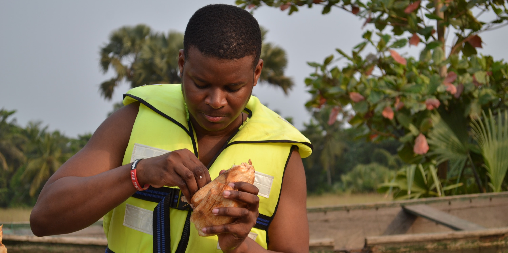

“Where Do You Want To Go Today”
“Where do you want to go today?” That was the advertising slogan printed on the package. It was a Compaq desktop computer, which was running on a Windows 95 operating system. Though it was a little outmoded for the year 2000, I was very excited to have it. I was living in Ghana at the time and I had waited many sleepless nights for this package to arrive from my mother who lived in the United States. Though I did not have working knowledge about the computer, I spent most of my time trying to figure it out, and after a few weeks I made myself computer literate. Ever since then, my passion for computers and technology has been relentless. I disassembled and reassembled my computer so many times that in later years I became the computer technician for my family and friends.
In high school I always found ways to integrate computers into the learning process and tried to educate my friends on the usefulness of computers. After high school in Ghana I moved to America to further my education and though everyone around me was certain that I was going to pursue a career that involved computers, I found it quite difficult to select a particular discipline in college. In order to make efficient use of the funds available to me, I decided to enroll in Anne Arundel Community College to try my hands on a few courses in order to be certain before picking a specific discipline. I enrolled in the computer science program and though I just had surface knowledge about computer programming, I fell in love with the program and transferred to University of Maryland, College Park. However the drive to further integrate technology and education never left me. In fact it led me to develop a passion for creative thinking and technology that leads to world-changing innovation. I was able to pull apart a computer to start my path in computer science. Now, my challenge is to pull apart constrictive thinking to start the path of innovation. This means pushing the boundaries of thinking that was instilled in me through boarding school and my household, and using the knowledge that I have gained in formal and self-education to propel new ideas forward. While I don’t have a direct response to the question posed to me years ago, I do know the nature of my answer. Where I want to go involves using technology to improve lives.